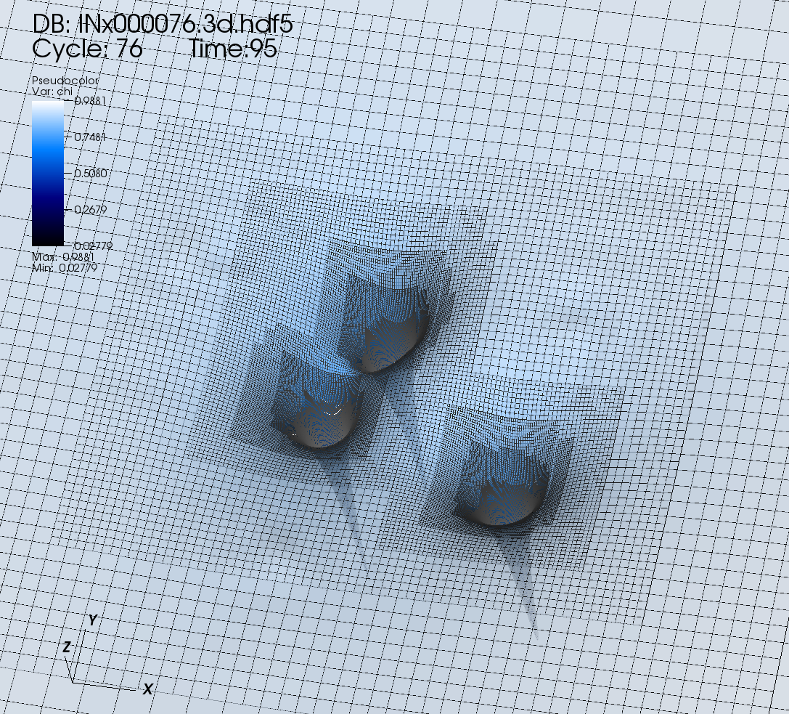
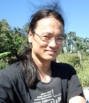
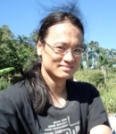

About
Numerical relativity has undergone a revolution in the past few years, driven both by recent breakthroughs in controlling unstable gauge modes and the rapid availability of powerful computer clusters. Simulations can give us an insight into cosmological problems which defy the perturbative approach, allowing us to derive a set of physical laws and principles. GRChombo provides the necessary theoretical and numerical infrastructure to attack these problems.
GRChombo is a Numerical GR code worked on by collaborators from Cambridge, Argonne National Laboratory and King's College London.


 


GRChombo is run on the COSMOS Shared Memory system at DAMTP and the collaborators are extremely grateful for the continuing assistance of the Cosmos team, Juha Jäykkä and James Briggs, in providing technical support. The COSMOS Shared Memory system is operated on behalf of the STFC DiRAC HPC Facility. This equipment is funded by BIS National E-infrastructure capital grant ST/J005673/1 and STFC grants ST/H008586/1, ST/K00333X/1. Our research also uses resources of the Argonne Leadership Computing Facility, which is a DOE Office of Science User Facility supported under Contract DE-AC02-06CH11357.